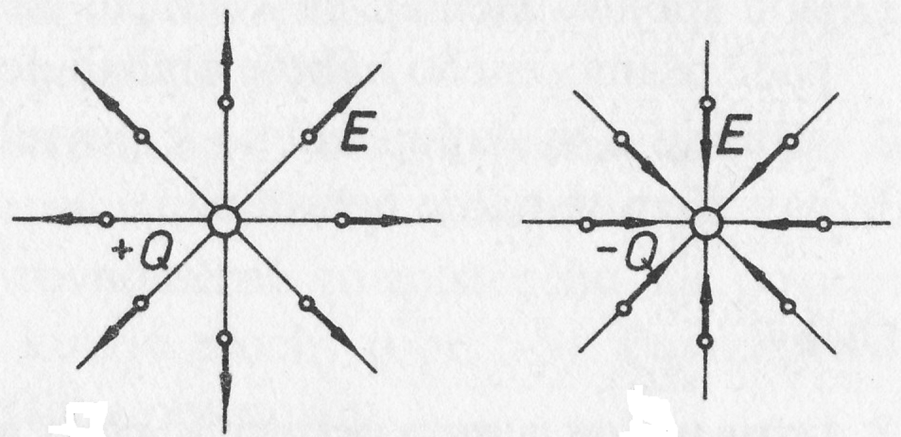
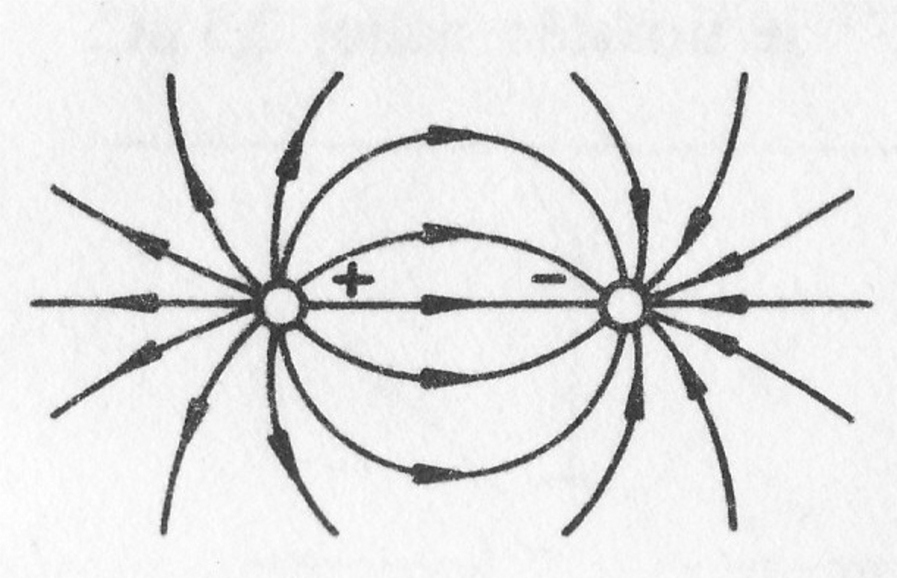
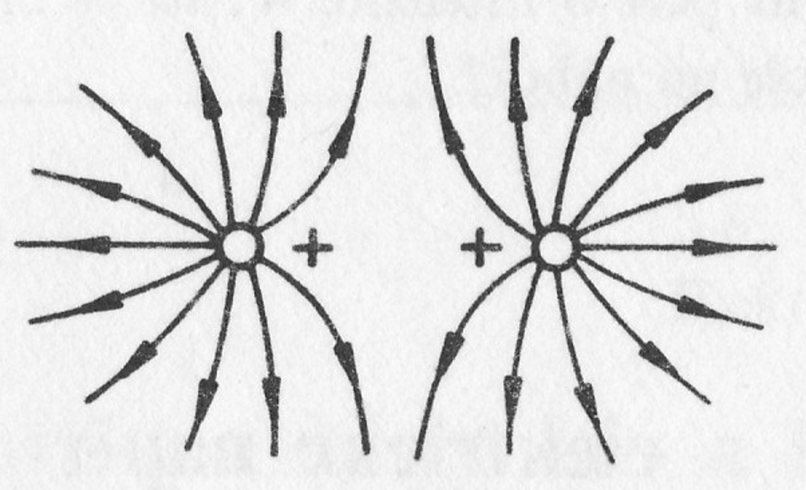
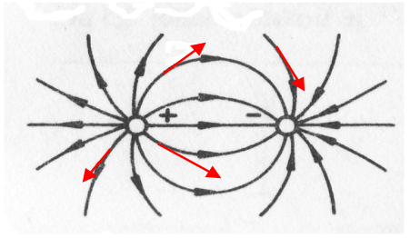

- Vzájemné silové působení mezi nabitými tělesy se uskutečňuje pomocí pole (nedotýkají se a přesto působí!)
- Elektrické pole: je kolem každého nabitého tělesa
- Potřebujeme veličinu k jeho popisu
Intenzita elektrického pole
- Je to vektorová veličina
- Má směr stejný, jako elektrická síla
- Jednotka: N.C^-1; častěji se používá V.m^-1
- Ve stejném tvaru platí i vně kulového vodiče. Pak se vzdálenost bere od středu tohoto vodiče.
- Slovně vyjádřeno: Velikost intenzity elektrického pole bodového náboje v daném místě je nepřímo úměrná druhé mocnině vzdálenosti místa od náboje.
Homogenní elektrické pole
- Jeho intenzita má ve všech místech stejnou velikost i směr
Radiální elektrické pole
- Okolo kladného náboje - Okolo záporného náboje
Pole dvou nesouhlasných nábojů
Pole dvou souhlasných (kladných) nábojů
Siločára elektrického pole
- Slouží ke grafickému znázornění el. pole
- Je to myšlená čára, jejíž tečna v každém bodě určuje směr intenzity pole
Vlastnosti siločar
- Jsou spojité; začínají na + a končí na -; u samostatného náboje ubíhají do nekonečna
- Vstupují a vystupují kolmo k povrchu elektricky nabitého tělesa
- Navzájem se neprotínají